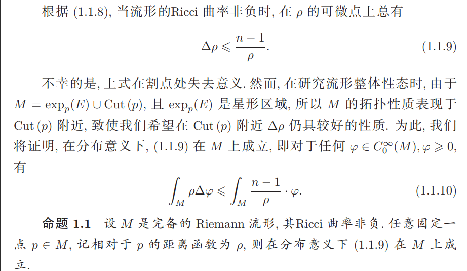

一些数学感悟
这里会记录一些我在探索时遇到的想法和问题。它们不完全来自我自己，或许是网络上的某个想法，也或许是某次听课时老师给我带来的感悟。如果能标注出处，我会尽量标注。
2025/2/8 黎曼几何一则
本问题是我在上个学期的黎曼几何课上学到的,来自于丘成桐《微分几何讲义》,如下图： 
这个定理描述的是黎曼流形上距离函数的拉普拉斯的一个性质.首先由 Laplace 比较定理可以得到,当流形的 Ricci 曲率非负时,在距离函数\(\rho\)的可微点上总有$\(\Delta \rho\le\dfrac {n-1}{\rho}\)$,然而上式在割点处 失去意义.
我们先来看看如下“证明”：记\(\Omega=\exp_p(E)\)满足\(M=\Omega \bigcup cut(p),\Omega\)为星形区域(从\(p\)点出发的每条测地线与\(\Omega\)的边界只相交一次),因此可取一族星形子域\(\Omega_{\varepsilon}=\exp(E_{\varepsilon})\subset\Omega\),其极限为\(\Omega\),且\(\Omega_{\varepsilon}\)是\(\Omega\)沿\(\rho\)方向内缩形成的.
从而\(\forall\varphi\in C_{c}^{\infty}(M),\displaystyle\int_{M}\rho\cdot\Delta\varphi=\int_{\Omega}\rho\Delta\varphi=\lim_{\varepsilon\to0^{+}}\int_{\exp(E_{\varepsilon})}\rho\Delta\varphi\)
根据 Green 公式:
\(\displaystyle\int_{\Omega}f\Delta g-g\Delta f=\int_{\Omega}div(f\nabla g-g\nabla f)=\int_{\partial\Omega}(f\frac{\partial g}{\partial \gamma}-g\frac{\partial f}{\partial \gamma})d\sigma\)
可以得到
\(\displaystyle\int_{M}\rho\cdot\Delta\varphi=\lim_{\epsilon\rightarrow0^{+}}\int_{\exp(E_{\varepsilon})}\varphi\Delta \rho+\int_{\partial(\exp(E_{\varepsilon}))}(\rho\frac{\partial \varphi}{\partial \gamma}-\varphi\dfrac{\partial \rho}{\partial \gamma})d\sigma\)
由于\(\varphi\ge0,\dfrac{\partial \rho}{\partial \gamma}\ge0\)
故上式\(\le\displaystyle\lim_{\varepsilon\to0^{+}}\int_{\exp(E_{\varepsilon})}\varphi\cdot\frac{n-1}{\rho}dx+\int_{\partial(\exp(E_{\varepsilon}))}\rho\frac{\partial \varphi}{\partial \gamma}d\sigma\)
到这里,我们会发现和待证结论相比多出一项:\(\displaystyle\lim_{\varepsilon\to0^{+}}\int_{\partial(\exp(E_{\varepsilon}))}\rho\frac{\partial \varphi}{\partial \gamma}d\sigma\),为什么呢?
事实上,采取书中的处理:我们需要利用到\(\rho\)是 Lipschitz 函数,从而其几乎处处可微,并利用到 Lipschitz 函数的 Stokes 公式,有
\(\displaystyle\int_M\rho\Delta\varphi=-\int_M\nabla\varphi\cdot\nabla\rho=-\lim_{\varepsilon\to0}\int_{\Omega_{\varepsilon}}\nabla\rho\cdot\nabla\varphi\)
再利用 Green 公式得到\(\displaystyle-\int_{\Omega_\varepsilon}\nabla\rho\cdot\nabla\varphi=\int_{\Omega_\varepsilon}\Delta\rho\cdot\varphi-\int_{\partial\Omega_\varepsilon}\varphi\frac{\partial\rho}{\partial\nu}\)
这样就消去了前面"证明"中多出的那一项.
总结:距离函数 Lip,Lip 函数几乎处处可微且有 Stokes 公式.有时候,函数的性质是否用得精细,是决定命题是否能证出的关键因素.
2025/3/4 导数之间的控制关系
近期同学们都在为了夏令营考试刷数分高代，我也整理一些内容。
首先是一道经典题目: 设 \(f(x)\)在\((a,+\infty)\)上\(n\) 阶可导.若\(\displaystyle\lim_{x\to+\infty} f(x),\lim_{x\to+\infty}f^{(n)}(x)\)都存在且有限，则 \(\displaystyle\lim_{x\to+\infty}f^{(k)}\left(x\right)=0,k=1,2,\cdots,n.\)
此题解决过程分两步:一是说明各阶导数极限的存在性,可以利用如下逻辑:泰勒展开\(\rightarrow\)范德蒙行列式\(\rightarrow\)各阶导数有界\(\rightarrow\)各阶导数一致连续,利用"\(f(x)\)有极限，\(f'\)一致连续，则\(f'\)有极限",推出极限存在.
第二步比较简单,利用范德蒙行列式说明极限是零.
然后是庞加莱不等式,大概是指 Sobolev 函数的\(L^p\)范数可以被梯度控制.丘赛曾经考过庞加莱不等式的最优常数问题,记录如下: 在\(\mathbb{R}^n\)的有界区域\(\Omega\)上证明 Poincaré 不等式\(\int_\Omega u^2(x)dx\leqslant C\int_{\Omega}|\nabla u|^2(x)dx\)
如果\(\Omega=(0,a)\times(0,b)\),证明:\(C\ge\frac{a^2b^2}{\pi^2(a^2+b^2)}\)